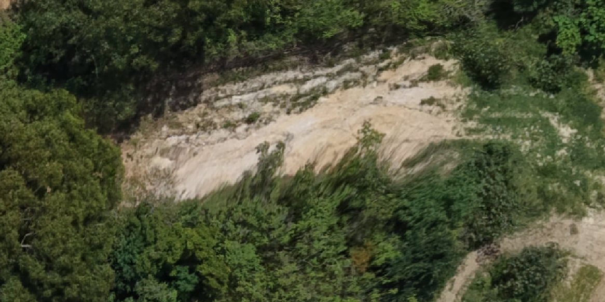
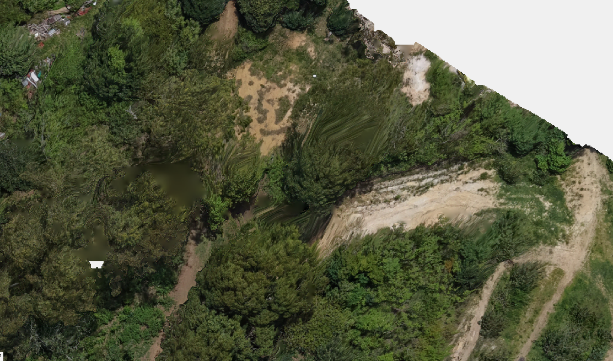
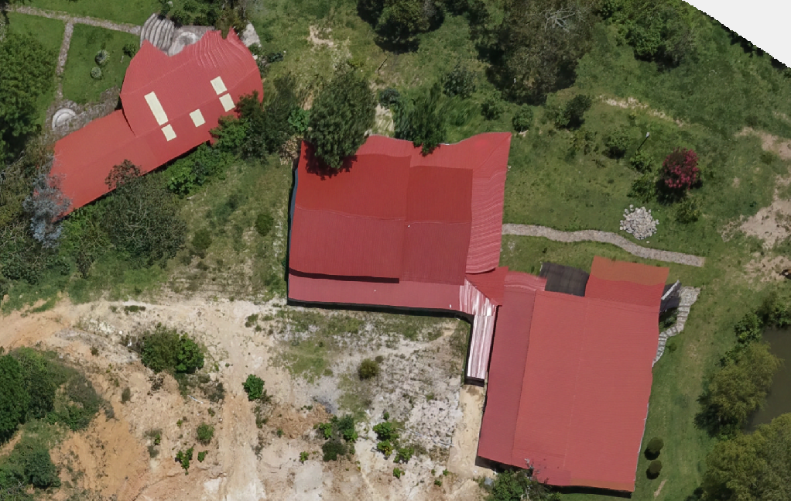
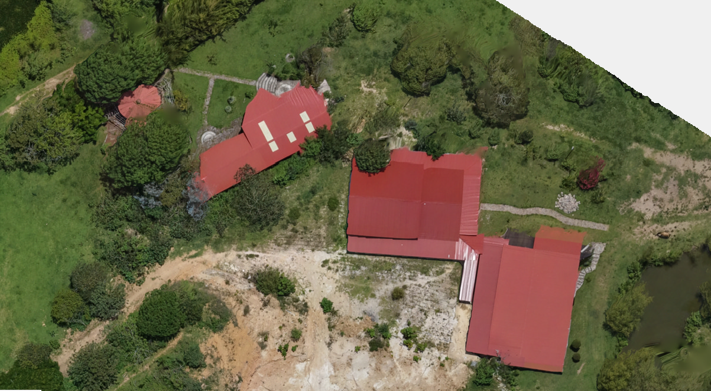
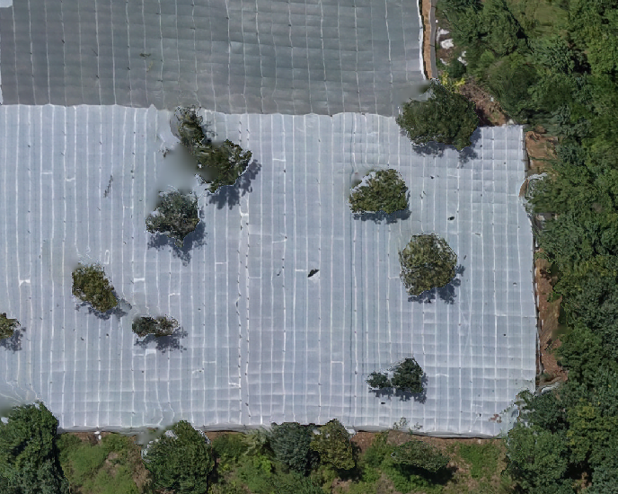
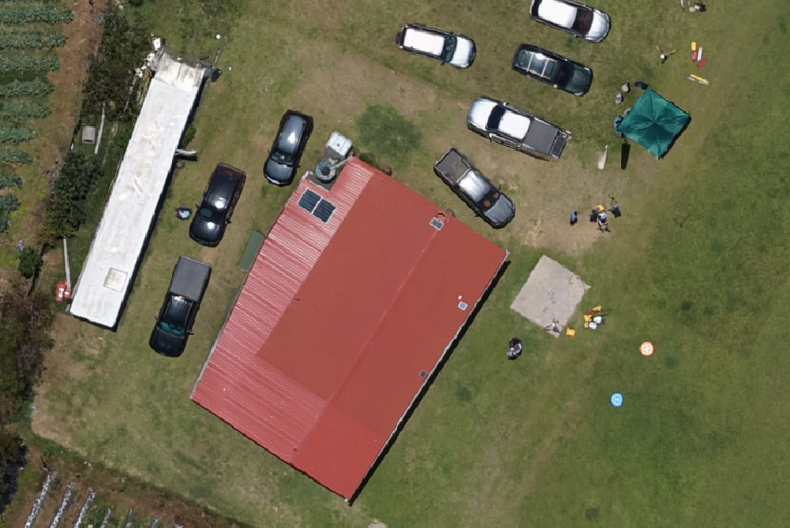

Qué se realizó en esta etapa
Se generaron dos ortomosaicos con los mismos parámetros de salida, cambiando únicamente la superficie de ortorrectificación. La comparación se realizó en zonas centrales, edificaciones, invernaderos, vegetación alta y bordes del bloque para identificar las diferencias geométricas entre utilizar DTM o DSM.
Las cuatro muestras se muestran con el mismo formato y relación de aspecto para facilitar la comparación visual sin superposiciones entre títulos e imágenes.
DTM · zona extrema

DSM · zona extrema

DTM · edificación

DSM · edificación

Lectura técnica
- El DTM fue aceptable en la zona central, relieve suave y superficies próximas al suelo.
- En bordes y vegetación alta aparecieron sesgos más evidentes.
- El DSM conservó mejor techos, árboles, invernaderos y objetos elevados.
Selección final: DSM para el ortomosaico principal; DTM como comparación metodológica.

DSM: árboles emergentes sobre cubierta agrícola.

DSM: edificación y objetos elevados.